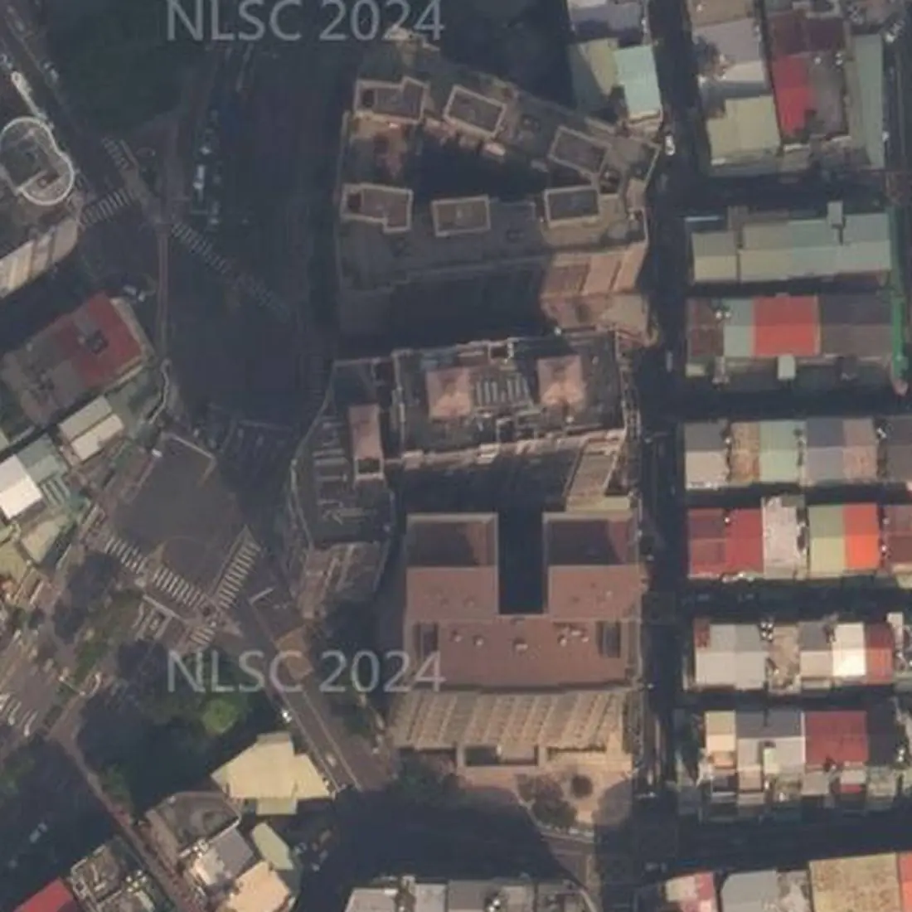

社區分析・文字版
高閣可以買嗎？板橋莊敬路社區優缺點、捷運、日照、學區、車位、管委會與看屋重點
帶看高閣時，買方最常問的就是下面這幾題。我把查過的資料整理在這篇，每一題第一段先講結論，跟上面的互動簡報（3D 模型、日照模擬、步行地圖）是同一份資料，數字都標了出處，實際狀況還是要以現場為準。
高閣可以買嗎？先說結論
高閣位於新北市板橋區莊敬路191～229號（單號），屬新埔生活圈，民國86年5月完工，地上19層。走到捷運新埔站（BL08）3號出口步行約435公尺、約6分鐘。優點是新埔站步行約6分鐘、公園與採買都在旁邊、公設比約2成3；要留意的是民國86年完工，留意維護、車位類型要問清楚。
適不適合，要看你最在意的是什麼。下面把買方最常搜尋的問題一題一題整理，每題第一段先講結論，數字都標了出處，實際狀況還是以現場為準。

從空中看高閣
莊敬路191～229號單號，地上19層、地下3層、302戶，旁邊就是萬板公園。
高閣實價登錄有幾筆成交？
查詢範圍：新北市板橋區莊敬路191～229號（單號），實價登錄買賣資料共 36 筆（交易期間 2021-01-06～2025-08-10；已排除親友、特殊關係等特殊交易 1 筆）。
資料截至 115/11/01 公布（本社區最近一筆交易日 2025-08-10），之後的成交以實價登錄網最新公告為準；不同戶型、面積不宜直接比較。
高閣到捷運站走路多久？
捷運新埔站（BL08）3號出口步行約435公尺、約6分鐘；捷運新埔民生站（Y17）步行約892公尺、約13分鐘；捷運板新站（Y15）步行約1,161公尺、約17分鐘。
步行距離資料來源：Google 地圖規劃建議路線，實際以現場為準。
高閣日照好嗎？冬天曬得到太陽嗎？
接著看日照。這裡用9樓示意冬天的陽光，低樓層比較容易被周邊大樓擋到，高樓層採光通常比較好。
看屋時可以上午、下午各看1次，感受那一戶的採光喔。
日照會因為面向、樓層、前後棟距差很多，看屋時建議上午、下午各去一次，站到窗邊看實際的採光與視野。
太陽位置：天文公式計算；日射：晴天直射理論值，不含散射與雲量；參考政府公開資料；社區以 19 層計（已查證）；結果為示意，實際以現場為準。
高閣學區是哪裡？
依政府公開資料，高閣的學區為埔墘國小、莒光國小、中山國中、江翠國中，實際以教育局公告為準。
學區每年可能調整，入學前記得再向學校或教育局確認。
走路到學校：莒光國小步行約598公尺、約9分鐘；埔墘國小步行約590公尺、約8分鐘（步行距離資料來源：Google 地圖規劃建議路線，實際以現場為準）。
高閣有車位嗎？車位有多少？
實價登錄交易中，無車位 26 筆、坡道機械 6 筆、坡道平面 4 筆。
看屋時建議確認車位的產權登記方式、位置與進出動線，機車位是否需要另外申請。
電動車充電：可以先問管委會的事
- 社區規約或管理辦法有沒有「電動車充電設備設置與管理」的條文？可以提供影本嗎？
- 地下室有沒有公共充電車位？是用公電還是專用電表？
- 住戶在自己車位加裝的申請流程：要附哪些文件（電機技師或承裝業評估、施工切結、保險）？要管委會核准還是區權會決議？
- 住戶電表集中在地下室，還是在各樓層？（影響拉線難度）
充電設備能否加裝，需依社區規約、管委會或區分所有權人會議決議，以及電機技師與台電的用電評估而定。
高閣有管委會嗎？管理方式怎麼樣？
管理方式：高閣社區管理委員會。
看屋時可以向管理室確認：社區規約、管理費收取方式、公共基金與近期公共修繕計畫，以及有沒有進行中的社區爭議。
高閣是哪家營造廠蓋的？
使用執照（86板使字第00579號）登記的承造人（營造廠）是漢陽營造工程股份有限公司。
高閣格局有哪些？幾房、幾坪？
依實價登錄申報資料（截至 115/11/01 公布），高閣有成交紀錄的住宅以2房最多（18筆），主建物約8.6～21.5坪。
| 房數 | 筆數 | 主建物坪數 |
|---|---|---|
| 1房 | 12 | 9.5～18.2 坪 |
| 2房 | 18 | 8.6～21.5 坪 |
| 3房 | 15 | 9.5～25.6 坪 |
| 4房以上 | 5 | 12.9～27.5 坪 |
| 其他 | 2 |
資料來源：內政部實價登錄，依申報的「建物現況格局」與「主建物面積」整理；為申報資料，可能與現況不同（例如改過隔間），不代表個別房屋。已排除特殊交易與預售屋，只計住宅用途；同一戶多次成交只計一次，只涵蓋有成交紀錄的戶。資料截至 115/11/01 公布，之後的新成交未納入，以內政部最新資料為準。坪數為主建物面積（不含附屬建物、陽台與公設），平方公尺換算成坪、取小數一位；筆數少於 3 筆的房數併入「其他」。僅供參考，實際以權狀與現場為準。
高閣生活機能方便嗎？超市、超商、市場走路多久？
步行可到：7-Eleven步行約74公尺、約1分鐘；全家便利商店步行約155公尺、約2分鐘；全聯福利中心步行約263公尺、約4分鐘；萬板公園步行約108公尺、約1分鐘；中英醫院步行約818公尺、約12分鐘。
- 7-Eleven（便利商店）：步行約74公尺、約1分鐘
- 全家便利商店（便利商店）：步行約155公尺、約2分鐘
- 全聯福利中心（超市）：步行約263公尺、約4分鐘
- 萬板公園（公園）：步行約108公尺、約1分鐘
- 中英醫院（醫療院所）：步行約818公尺、約12分鐘
步行距離資料來源：Google 地圖規劃建議路線，實際以現場為準。地點名稱與位置參考政府開放資料與連鎖店官方門市查詢。
高閣是哪一年完工的？幾層樓、幾戶？
高閣民國86年5月完工、地上19層、地下3層、302戶、鋼筋混凝土造。
| 完工 | 民國86年5月 |
|---|---|
| 樓高 | 地上19層 |
| 地下層 | 3層 |
| 戶數 | 302戶 |
| 結構 | 鋼筋混凝土造 |
| 管理 | 高閣社區管理委員會 |
| 使用執照 | 86板使字第00579號 |
參考政府公開資料；實際以現場與地政登記為準。使用執照依新北市政府工務局使用執照存根影像。
高閣優缺點有哪些？
優點：新埔站步行約6分鐘；公園與採買都在旁邊；公設比約2成3。要留意：民國86年完工，留意維護；車位類型要問清楚。
新埔站步行約6分鐘
到板南線新埔站3號出口，步行約435公尺、6分鐘。
公園與採買都在旁邊
萬板公園步行約1分鐘；7-Eleven約1分鐘、全家約2分鐘，全聯約4分鐘。
公設比約2成3
依實價登錄面積計算，36筆成交公設比中位數約23.5%，各戶不同。
高閣缺點是什麼？看屋時要確認什麼？
看高閣要先確認的是：民國86年完工，留意維護；車位類型要問清楚。
民國86年完工，留意維護
看屋時留意外牆、管線、電梯的保養狀況，也可以問管委會近年的修繕紀錄。
車位類型要問清楚
社區有平面與機械車位，成交紀錄也有不附車位的。有開車的話，確認車位類型、尺寸與車高限制。
高閣社區分析影片

▶ 【社區分析】高閣｜板橋區莊敬路｜日照・交通・生活機能・實價登錄｜板橋阿陞聊房（YouTube）
高閣附近社區
想一次比較位置，可以看板橋商圈地圖，或回首頁看全部社區分析。
高閣所在區域的整理：新埔買房。
想看高閣？
想知道高閣目前有沒有房子在賣，歡迎聯絡。
☆預約看屋請聯絡：林津陞 0925-635-678
加官方 LINE：@banqiao.asheng，聊天室輸入「攻略」，系統自動傳送《買房避坑攻略》電子檔（約2萬字／38頁）
全國不動產板橋加盟店
經紀業｜非凡不動產有限公司
經紀人｜謝政峯（99）北縣字第002181號
營業員｜林津陞（99）登字第148103號
資料來源：參考政府公開資料（依政府資料開放授權條款使用）；地圖：© OpenStreetMap contributors（ODbL）；本店之前拍攝的社區照片；空拍畫面：Google Earth。步行距離與日照為規劃與模擬結果，學區以教育局公告為準，房屋資訊仍須以現場、產權資料及正式文件為準。